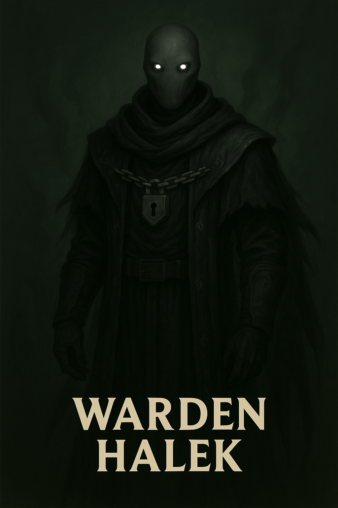

Warden Halek

Name & Alias: Warden Halek – Vault Warden
Age / Race / Role: Unknown / Unknown (Mystic-Class) / Dimensional Enforcer, Orderkeeper
Appearance: Towering figure in obsidian armor with radiant chains across his arms. Face always hidden beneath a sealed helm.
Affinities & Energy Types: Dimensional Lockdown, Aura Suppression
Threat Tier: S+/SS-Rank
Core Stats (0–10):
• Power: 10
• Speed: 5
• Technique: 9
• Intelligence: 8
• Defense: 10
• Aura Control: 10
Signature Abilities:
• Vault Chain Seal
• Null Aura Shackle
• Dimension Halt Ward
• Echo Suppression Field
• Warden's Oath Lock
Personality Summary: Silent, unshakable, and terrifyingly precise. Halek's presence alone halts conflict. He answers only to balance.
Faction or Allegiances: Starbrand Marshals